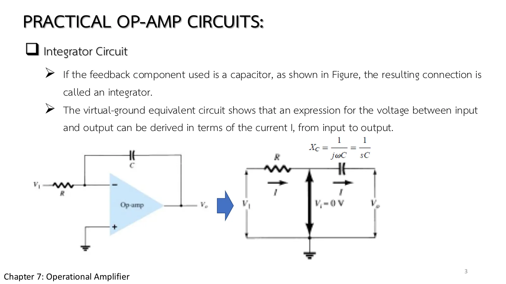
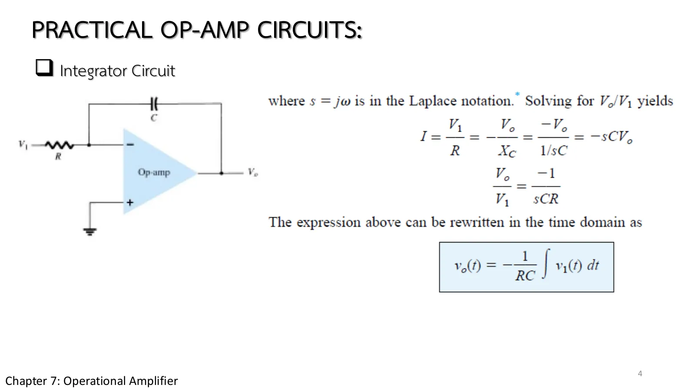
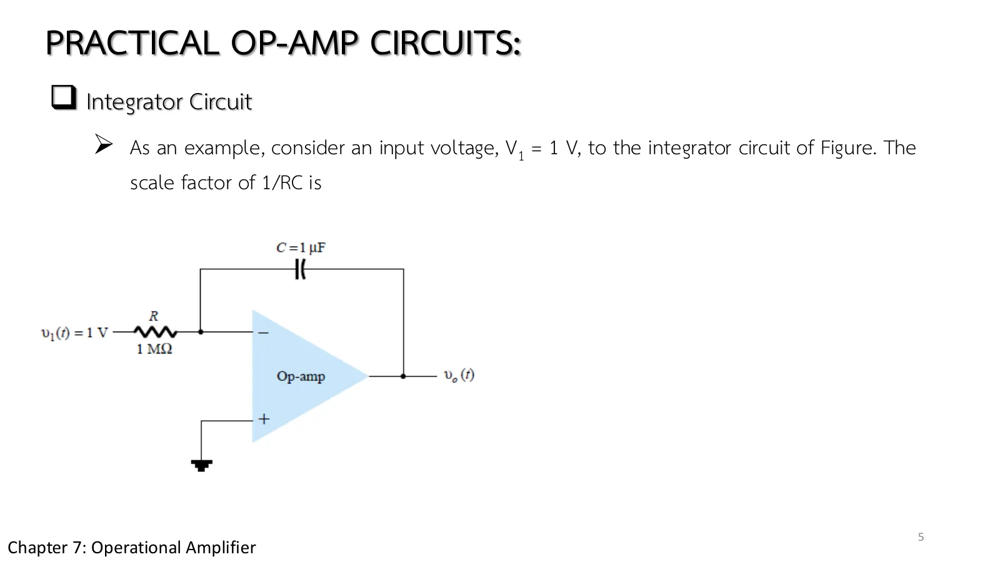
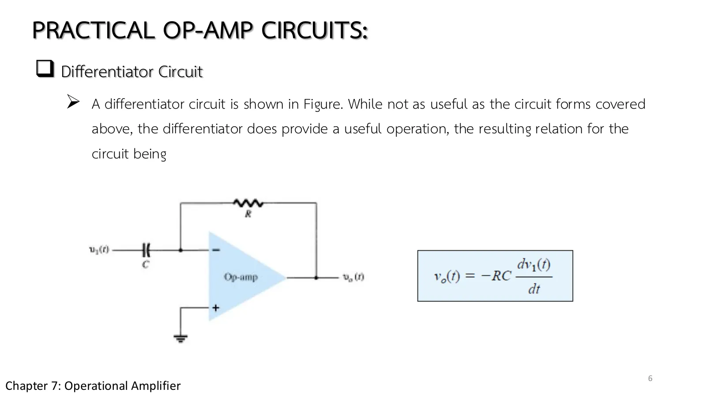

Leave a tap running and the water level in the bucket is the total of everything that has flowed in since the start. A capacitor does the same with charge: its voltage is the total of the current that has flowed into it. Put a capacitor where \(R_f\) was and the op-amp becomes an integrator that keeps adding up its input over time; swap R and C and it becomes a differentiator that tells how fast the input changes. Every simulation on this page runs in real time steps (chapter 7 slides, set 2, pp. 3–6; Boylestad section 10.5).
The integrator (pp. 3–4, Fig. 10.38): the virtual ground makes the current through R equal to \(v_1/R\), and all of it must flow into C, so \(v_C\) grows as the integral of \(v_1\). The left end of C is at 0, so the output is \(-v_C\): \(v_o = -\frac{1}{RC}\int v_1\,dt\) (Eqs. 10.12–10.13, written as \(V_o/V_1 = -1/sCR\)).
A constant step gives a straight ramp (p. 5, Fig. 10.39): \(v_1\) = 1 V with 1 MΩ and 1 µF gives a scale factor −1/RC = −1 V/s, so the output falls 1 V every second; R = 100 kΩ gives −10 V/s. The ramp can only go to \(-V_{sat}\), where it stops: a real integrator always saturates if the input has a dc component.
Several inputs (Fig. 10.40, Eq. 10.14): each has its own scale factor \(1/R_kC\) (200 kΩ, 100 kΩ, 1 MΩ with 1 µF give 5, 10, 1): a summing amplifier that integrates too, the heart of the analogue computer.
The differentiator (p. 6, Fig. 10.41): \(i = C\,dv_1/dt\) through R gives \(v_o = -RC\,dv_1/dt\). A triangle gives a square wave, a sine a cosine (90° ahead), a step a spike to the rail. Less used, because it amplifies high-frequency noise.
The time constant RC is the single number that sets the scale: the integrator divides by it, the differentiator multiplies.
ตอนที่ 1 · เปลี่ยน \(R_f\) เป็นตัวเก็บประจุ
Part 1 · Replace \(R_f\) with a capacitor
อินทิเกรเตอร์: ขาออกจำทุกอย่างที่ผ่านมา
The integrator: an output that remembers everything
Slide p. 3 puts a capacitor in the feedback path. The − input is still a virtual ground, so the current \(V_1/R\) flowing in through R must all go on to charge the capacitor, since the op-amp input takes none.
Slide p. 4 solves for \(V_o/V_1 = -1/sCR\) and turns it back into time: \(v_o(t) = -\dfrac{1}{RC}\displaystyle\int v_1(t)\,dt\). The output is the running total of the input, inverted and scaled by \(1/RC\).

สไลด์ชุดที่ 2 หน้า 3: อินทิเกรเตอร์และวงจรสมมูลกราวด์เสมือน (รูป 10.38)Set II slide p. 3: the integrator and its virtual-ground equivalent (Fig. 10.38)

สไลด์หน้า 4: จาก \(V_o/V_1 = -1/sCR\) ถึงสมการ 10.13Slide p. 4: from \(V_o/V_1 = -1/sCR\) to Eq. 10.13
Slide p. 3 opens with "PRACTICAL OP-AMP CIRCUITS", continuing set I. The simulations on this page step through real time (the capacitor remembers its charge) and are slowed down to be watchable: the badge gives the circuit time, and the window restarts when it ends.
Choose the circuit and the input (step, square, triangle, sine), then set the amplitude, the frequency, R and C. The lower left graph is \(v_1(t)\), the lower right \(v_o(t)\) from the time simulation. Integrator: square → triangle, sine → minus cosine, step → a ramp to the rail. Differentiator: triangle → square, sine → minus cosine growing with frequency, step → a spike. Raise the frequency of the integrator: the output shrinks as 1/f.
ตอนที่ 2 · ขาเข้าคงที่ ขาออกเป็นทางลาด
Part 2 · A steady input, a ramp out
รูป 10.39: ตัวคูณสเกล \(1/RC\)
Fig. 10.39: the scale factor \(1/RC\)
สไลด์หน้า 5 ป้อนขั้น 1 V เข้าอินทิเกรเตอร์ที่มี R = 1 MΩ และ C = 1 µF กระแส 1 µA ไหลเข้าตัวเก็บประจุไม่หยุด แรงดันของมันจึงโตขึ้นเป็นเส้นตรง และขาออกลาดลงด้วยความชันคงที่
ก่อนเปิดเฉลย ลองเดาความชันเป็นโวลต์ต่อวินาที แล้วคิดต่อว่าถ้าลด R เหลือ 100 kΩ ขาออกจะไปชนราง −13 V เร็วขึ้นกี่เท่า
Slide p. 5 applies a 1 V step to an integrator with R = 1 MΩ and C = 1 µF. A current of 1 µA flows into the capacitor without stopping, so its voltage grows in a straight line and the output ramps down at a constant slope.
Before opening the solution, guess the slope in volts per second, then how many times sooner the output reaches the −13 V rail when R drops to 100 kΩ.

สไลด์หน้า 5: ขั้น 1 V เข้า 1 MΩ, 1 µF (รูป 10.39a)Slide p. 5: a 1 V step into 1 MΩ, 1 µF (Fig. 10.39a)
สไลด์หน้า 5 ตัดจบก่อนคำตอบ ("The scale factor of 1/RC is" แล้วว่าง): −1/RC = −1 V/s และกรณี R = 100 kΩ ให้ −10 V/s อยู่ในตำราหน้า 626–627 (รูป 10.39b–c)
Slide p. 5 breaks off before the answer ("The scale factor of 1/RC is", then nothing): −1/RC = −1 V/s, and R = 100 kΩ gives −10 V/s, on pp. 626–627 of the book (Fig. 10.39b–c).
↓ โจทย์ 1: ขั้น 1 V แล้วลด R เหลือ 100 kΩ
↓ Problem 1: a 1 V step, then R reduced to 100 kΩ
1
รูป 10.39: ขั้น 1 V ลาด −1 V/s แล้ว −10 V/s
Fig. 10.39: a 1 V step, a −1 V/s ramp, then −10 V/s
Set II slides pp. 3–5 · Boylestad Fig. 10.39, Eqs. 10.12–10.13
โจทย์
อินทิเกรเตอร์มี R = 1 MΩ, C = 1 µF ป้อนขั้นคงที่ \(v_1\) = 1 V จงหาตัวคูณสเกล 1/RC และขาออก \(v_o(t)\) แล้วทำซ้ำเมื่อ R = 100 kΩ
Problem
An integrator has R = 1 MΩ and C = 1 µF; a constant \(v_1\) = 1 V is applied. Find the scale factor 1/RC and the output \(v_o(t)\), then repeat for R = 100 kΩ.
\(R_1\) = 200 kΩ, \(R_2\) = 100 kΩ, \(R_3\) = 1 MΩ, C = 1 µF. Find the scale factor of each input, and the slope of the output for \(V_1\) = 0.2 V, \(V_2\) = −0.1 V, \(V_3\) = 1 V.
The differentiator: an output that measures how fast things change
สลับตำแหน่งให้ C อยู่ขาเข้าและ R อยู่เส้นป้อนกลับ (สไลด์หน้า 6) กระแสที่ผ่าน C แปรตามความเร็วที่แรงดันขาเข้าเปลี่ยน จึงได้ \(v_o(t) = -RC\,\dfrac{dv_1(t)}{dt}\)
Swap the places so that C is at the input and R in the feedback (slide p. 6). The current through C follows how fast the input voltage changes, which gives \(v_o(t) = -RC\,\dfrac{dv_1(t)}{dt}\).
The slide admits it is less useful than the circuits before it: the faster a signal changes, the bigger the output, so high-frequency noise is amplified too. With a triangle wave, though, it does something neat: each edge has a constant slope, so the output is a square wave.

สไลด์หน้า 6: ดิฟเฟอเรนชิเอเตอร์ (รูป 10.41, สมการ 10.15)Slide p. 6: the differentiator (Fig. 10.41, Eq. 10.15)
Integrator + ±1 V square at 100 Hz with R = 100 kΩ, C = 0.1 µF (RC = 10 ms): a 5 ms half period at 100 V/s gives a ±0.25 V triangle. Raise the frequency to 1 kHz: ±0.025 V (it falls as 1/f). This is a kind of low-pass filter.
Integrator + sine: the output is minus a cosine, 90° behind, of size \(A/\omega RC\). Check at the frequency where \(\omega RC\) = 1: the output equals the input.
Differentiator + step: a spike to the rail for one time step, then back to zero (the charge rushes into C in one step). Real circuits add a resistor in series with C to tame this pulse.
Try this 2 — problems 1–4
Problem 1: while the output ramps down, hover over C: a constant 1 µA, yet a steadily rising voltage: the very definition of a capacitor, \(i = C\,dv/dt\).
Problem 2: at 173 ms the output hits the −13 V rail; hover over the op-amp: \(V_d\) is no longer zero, and R's current no longer enters C (the dots stop).
Problem 4: while the input rises the dots run one way, while it falls the other; the 40 µA magnitude is constant through each half period.
Chapter 7 slide set II, pp. 3–6 · Boylestad & Nashelsky, 11th ed., §10.5 (Figs. 10.38–10.41, Eqs. 10.12–10.15), Problem 10